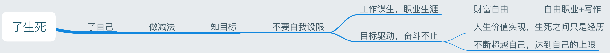

我的随笔
一条鱼的死亡 2020-03-03
用酒精给它涂一涂，它会不会好受点？
如果一种哲学说：人是目的，那么鱼是不是也是目的？
我想是的，生命本身就是目的。
而谁是我，我是谁，也许我是鱼，鱼也是我。
鱼死了，我的一部分也死了。
我安慰鱼，同情鱼，也是在安慰我自己，同情我自己。
我是谁？也许我不仅仅是我。
爱一个人 2007-12 / 2020-02-02
爱一个人就要爱他的全部
从头发到灵魂
深深的理解他
并接受他
希望 2020-01-30
晚上看完《Joker》，想起了很多感受和回忆。脑海中的经历就冒出了这样几句话，虽然很短，却句句沉重。
在奔跑的过程中，难免迷失在森林中
不知不觉的，跌入黑暗
在黑暗中，仿佛无法获得勇气和力量
慢慢的，连感受都无法感受
而冥冥中，不知道从哪里来的勇气和力量
敲开了一点亮光
这道光是上帝，是佛祖，是无穷的希望
带领着走向那片平原
蓦然回首，发现黑暗中
自己在狡黠的眨眼
脑海中的跳跃 2019-11-06
可怕的景象叠加在现实的光线中
忐忑下一秒的时光是否安全
仿佛下一个镜头就是坠入深渊
却幻想那是飞跃沟壑的跳板
断了联结
摇曳飘荡
挑战？机会？是否还有希望
是啊！希望总是孕育在剧烈的失望之中
放弃虚伪的假象
迎接真实
尽管疼痛，尽管无法安慰，尽管不像化学合成的饮料那样甜香
将心放在心上
这就是生命应该的姿态
修心 2017-04-30 20:15:00
在人生的漫漫旅途中，我经常思考的是：什么才是重要的而需要把握的，什么是应该放下甚至放弃的，如何做到轻松放下，淡定从容？
五一劳动节，二零一七年。劳动者的节日，这是一个应该庆祝的日子，正是因为劳动，才带来了工具，才产生了人类文明。而浩瀚的人类文明长河中，中国传统文化给人带来了很多值得深思的东西。中国传统文化中最核心的一个词，就是修心。
朗读者有一期节目，讲的是秋歌和秋雨的故事，这是一对双胞胎，而命运多舛，他们患上了严重的自闭症，治疗之路艰难而漫长，偏偏祸不单行，秋歌同时患上了白血病，长期化疗带来的不仅仅是孩子的痛苦，更难以忍受的是父母那颗无法直视孩子受痛苦折磨的心啊！
还有，一个大山里的孩子，因为家里的变故不得不休学一年，孩子遇到了一位好老师，轻轻的拍着孩子的肩膀，告诉他：“明年，到我这里复学。” 这个孩子叫陈忠实，一位杰出的作家。
中国每天约1万人被确诊患上癌症，而癌症死亡率大约1／7即每天全中国有1400多人死于癌症。当然，还有车祸，其他疾病，各种意外夺走很多人的生命，破坏着那么多的家庭。
这个世界上没有新鲜事，只是你没有真正经历，没有深刻体会而已。
对于这个世界，我能想到的最正确的态度，应该是：“敬畏”。你没有理由不敬畏自然，一场地震就夺走成千上万人的生命。你没有理由不敬畏社会，社会的规则会让你知道什么才是真正的公平。你没有理由不敬畏你所处的工作，这是你和家人的经济和价值来源。你没有理由不敬畏周围的人，他们看上去可能平凡或者自大，傲娇或者谦虚，讨人厌或者招人爱，他们都有自己人生的成长经历，每个人都有其值得学习的地方。
敬畏这个世界，更重要的是敬畏自己。从某种意义上讲，每个人都是独一无二的生命奇迹。要敬畏自己，就是要正确面对自己内心的善与恶。人之初，性本善。保护好自己应有的善良，才能发现更多的美。直面自己内心的恶，才能真正做到自知之明，人是复杂的多面体，从任何一个角度折射出来的影子都是真相的一方面，而已。
修心，不是一句空话，要做的事情很多。读书，读的是作者做事做人的态度和哲学。实践，是将自己的做人处事哲学融会贯通到自己的周遭中去。
你的遭遇有多糟？想想秋歌的父母，想想大山的孩子，你的心是不是就平和了一些，真正的平和才能让你继续前进。这就是修心。
推己及人，当你遇到同样遭遇的人，你的同情心能否让你更多的帮助别人，相信你收获的更多。有一次，路过安河桥北小路的路口，一对夫妻过马路，我很远就减速，示意他们先过，女士展现出了真诚的微笑，还伸了大拇指，这让我在开心了很久，你说，我是不是赚到了？这就是修心。
更多的时候，你无法控制你野马一样的坏情绪，口无遮拦，伤人无数，包括自己。那么，请静下来，深呼吸，读读书，劳动一下。正如那位居士所言，得道之前，我是砍柴，挑水，做饭，得道之后，我还是砍柴，挑水，做饭。差别在于：得道之前，我砍柴时想着挑水，挑水时想着做饭，得道之后，我砍柴时就想着砍柴，挑水时就想着挑水，做饭时就想着做饭。有时候，道理都是简朴至极的。
读万卷书，行万里路，做不到阅人无数，至少可以做到和自己和平相处。什么是重要的？什么是可以把握的？如何做到轻松放下？我想都和你自己的那颗心有关。
谈谈苟且的理想 2017-06-20 15:29:00
理想，真的只是高大上的存在，官僚的说辞吗？当然不是，理想应该正名！
在当今中国的大地上，我不知道还有多少人面临着各种各样的痛苦，刚从知乎的帖子上看到计划生育政策强制让七个月大的孩子引产，简直泯灭人性！当你想改变这一切时，你内心的理想是否要蓬勃而出？为人类的解放而奋斗！这真不是口号，而是内心的声音。
坚持又是另外一回事，当你离开那个情绪，离开那个片段，你又感受到房子的压力，单位的待遇，发展的瓶颈时，你自我利益的小人又开始躁动，这些其实都是信息流逐渐获取对我们的控制权的表现，信息带着各种观点，揉杂着好奇和迎合，让我们陷入信息的洪流，不停的打旋，无法自拔。
该怎么拯救苟且的理想？首先要面对自己，打开心胸，承认自己的过错，原谅自己，修正自己。接下来，把内心的垃圾扔出去，看看自己都变成什么了？精致的利己主义者还是虚无的犬儒主义者。不管自己变成了什么，看看自己到底是不是希望的那样。如果不是，改变自己。然后就简单了，你内心敞亮了，容纳进新的好的东西比如理想的时候，慢慢的放进去，调整好位置，让它舒服的躺在你内心里的沙发上，微笑着看心花怒放。
静下来想想，人生的时间总不能都浪费在纠结和彷徨中，那就找到自己的理想，当今中国有那么多值得做的事情，找一件事情，把它做好，也就不枉此生了吧。
所以，理想绝对不能苟且的躺在情绪波动的缝隙中！要把它拿出来，抖擞精神，太阳下晒干，蒸发细菌，清新自然。
苟且的理想，是我们呆在自己的小小瓶子里，内心偶尔发出的微小声响。顺着线索找到它，比如降低中国的交通事故：研发汽车中的自动安全防护系统（Volvo已经做了很好的产品），提高自动驾驶的安全技术，创新管理加强法制建设。比如，消除国人内心的焦虑感：提高文化产品，加大文化输出，提高国人的精神归属感和凝聚力，做优秀的文化产品，做有价值的公益事业（帮助心理疾病患者克服心理障碍）。比如，做父亲后，对于孩子的一丝痛苦都会放大很多倍，如何让孩子健康成长，可以做很多免费公益课，加强幼儿教育水平，给孩子一个科学而健康的童年教育，保护每个孩子的好奇心，让他们自由呼吸，不被俗世的框框所束缚。
你以为你没有理想？你有，只是你听不到，因为外面的噪音就像山洪爆发，地震袭来一样，你静不下来，更听不到那一丝内心的声音。所以，建议每天给自己半个小时，和自己聊聊天，谈谈你的理想，你为自己的理想做了什么，还能做什么，做到了多少。我相信，你会越来越热爱你自己的！也只有这样，等你面对人生的无常，生命的消逝时，你回忆往事，你还能会心一笑。因为你知道，多年的坚持是值得的，那苟且的理想，并没有关在笼子里，已经开始飞翔！
给无缘人 2018-01-17 19:45:00
你付出的真心
我本无意辜负
年轻而无知的人啊
但愿，那些真心
都在未来的树枝上
开出美丽的花朵
如何追求你想要的人生 2017-07-07 17:31:00
每个人都是独一无二的。追求往往是徒劳。做自己最重要
在这个世界上，没有一件东西是完全一样的，当然也包括人自己。每个人都是大自然的艺术品，充满灵性，独一无二。
首先你要清楚的认识你自己。
其次，所谓抓得越紧越是徒劳。真正有效的方法是：塑造你自己，无论是设定目标抑或寻找榜样，把自己打造成配得上那种人生的人的模样。
最后，做自己最重要。模仿只是模仿，自己的特色才能让你真正成为你自己。
认知决定你的高度，视野决定你的广度，忘记追求，做最好的自己，其实你的人生就是你想要的！
人生的架构图 2017-07-21 11:39:00
人生的道路其实也不过如此，最重要的是了生死，知自己，不要自我设限。
